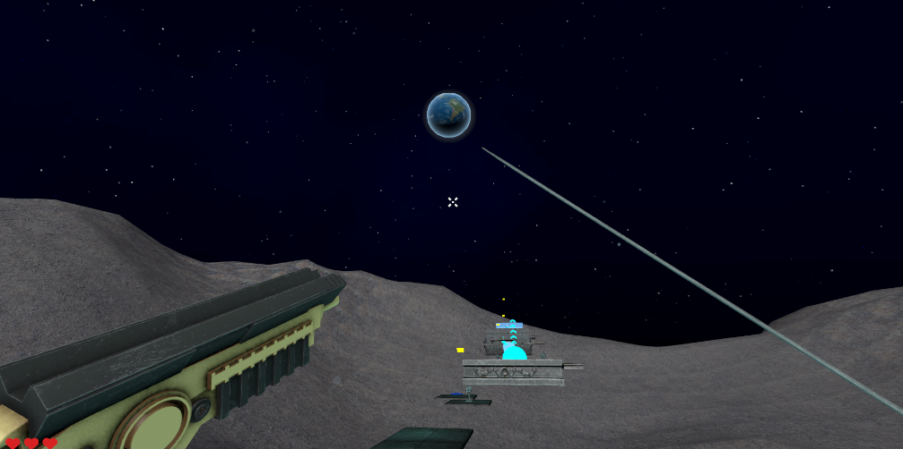

Lunar Lock

Lunar Lock is an immersive first-person platformer game that inspired by various successful game in the industry such as Neon White and Ghost Runner. This game is also the capstone Project for CSE 5912. As a team of 8, we work on this game for 4 month from scratch since Jan 18th. The game is still under development and is schedule to be release in April 22nd.
Setting
A corrupt research organization has kidnapped the (human) player and infused them with moon dust, which is widely believed to grant exceptional powers- which is true. You now move faster and jump further than any human on the planet but you can feel the moon dust shift in your blood with the movements of the moon which causes you immense pain.
The facility they've built around you is made to contain a human, but you wouldn't call yourself that anymore. You now plan to escape from the facility, using any experimental tools that you can find, and destroy the moon so you can return to the life which you once had.
About
As a first person platformer the game focus on the movement and platforming mechanics.
The player can use a variety of tools to navigate the environment, including a grappling hook, a katana that can throwing projectile, pogo movement, and double jumping.
There are multiple levels, each offers a variety of platforming challenges and interactive object. Such as trampolines, missiles, swaying axes, and moving platforms.
A customized first-person controller script was developed for this game. It use a rigidbody to manipulate the movement of player object. A special thing worth mentioning is the tools we use to make the player animation.
As the Animator of the team. I use the META oculus plug-in and a META quest 3s to track the player's hand motion. Allow player to swaying the katana, pick up items with a animation playing.
Click the button below to download the latest version of the game.
Download Game (ZIP)Email: zhou.3885@osu.edu
phone(US): +1 3802132640
phone(PRC): +86 15927709314